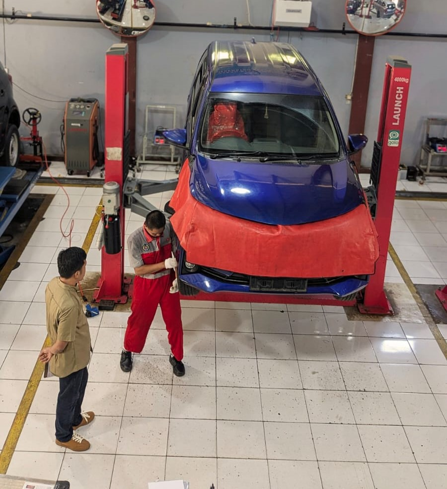
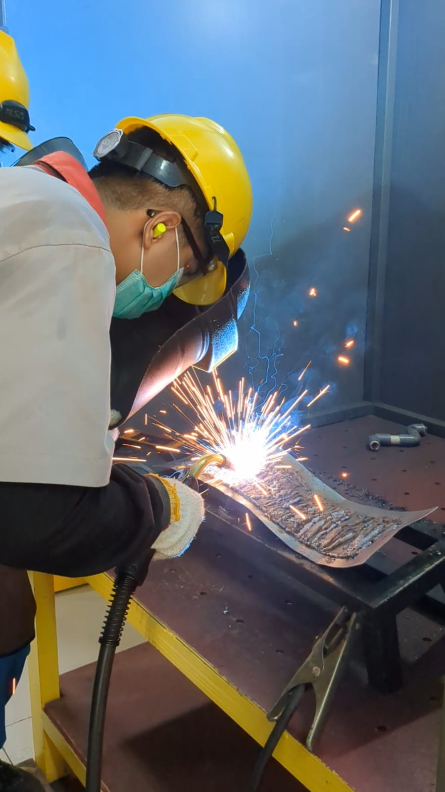
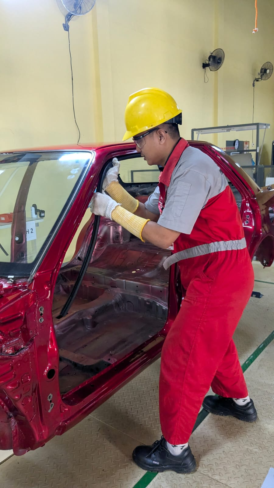
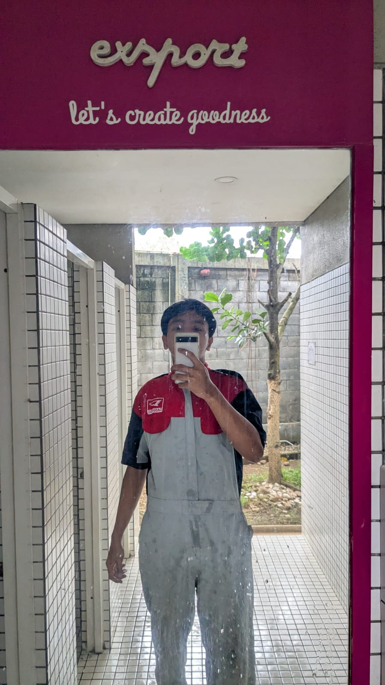
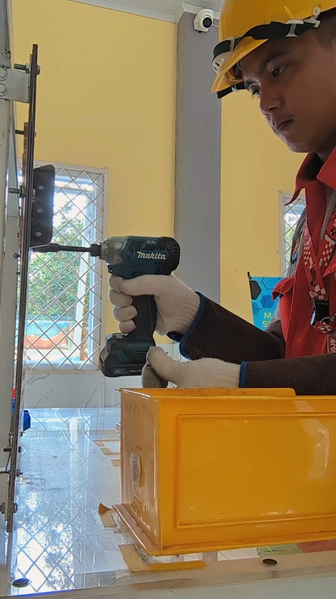

USK Daihatsu
Uji Sertifikasi Kompetensi (USK) bersama daihatsu untuk mengukur kelayakan siswa selama proses belajar, dengan menerapkan SOP, ketelitian, standar keselamatan kerja perusahaan
Siswa Teknik Kendaraan Ringan yang siap berkontribusi menjaga performa optimal mesin, sasis, dan sistem-sistem kendaraan secara profesional
Sertifikat
Bulan Pengalaman Magang
“Belajar dari masa lalu, hidup di masa kini, rencanakan masa depan"

Uji Sertifikasi Kompetensi (USK) bersama daihatsu untuk mengukur kelayakan siswa selama proses belajar, dengan menerapkan SOP, ketelitian, standar keselamatan kerja perusahaan

Pelatihan intensif pengelasan CO2 (GMAW) standar industri otomotif, berfokus pada pengaturan arus dan kecepatan kawat, kestabilan sudut torch, serta penerapan K3

Pelatihan teori dan praktik Toyota Production System (TPS) melalui simulasi lini perakitan otomotif, berfokus pada pekerjaan terstandar, efisiensi waktu siklus, serta penerapan K3.
Selengkapnya →
Praktik Kerja Lapangan sebagai Asisten Mekanik di Astra International – Daihatsu Sales Operation (AI DSO) Asia Afrika Bandung, menangani servis berkala dan perawatan kendaraan.
Selengkapnya →
ringkasan singkat
Selengkapnya
SOON
Selengkapnya